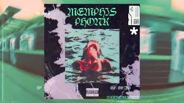
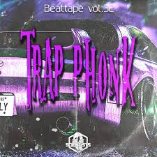
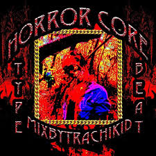
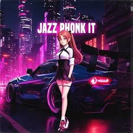
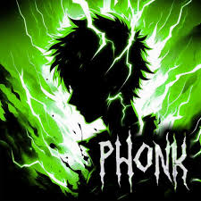

Memphis Phonk

Este subgénero se originó en Memphis, Tennessee, y se caracteriza
por sus samples de rap y soul de la ciudad. También incorpora elementos
de la música gótica y electrónica, lo que le da un ambiente oscuro y enigmático.
|
Trap Phonk

Este subgénero es una combinación de Phonk y trap, y se caracteriza
por sus beats pesados y suaves. Los samples de funk y soul se utilizan para crear
un ambiente retro, mientras que los elementos de trap se utilizan para darle al
género un ambiente moderno.
|
Horrorcore Phonk

Este subgénero se enfoca en las letras oscuras y explícitas, y a menudo
presenta temas de horror y violencia. La música Horrorcore Phonk a menudo utiliza
samples de películas de terror y programas de televisión
|
Jazz Phonk

Como su nombre lo indica, este subgénero se enfoca en el jazz y los samples
de jazz. Jazz Phonk a menudo utiliza samples de saxofón, trompeta y otros instrumentos
de jazz para crear un ambiente sofisticado y elegante.
|
Artistas

Clic a la imagen para la otra página
|